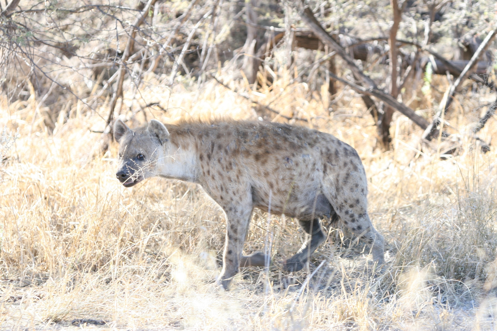
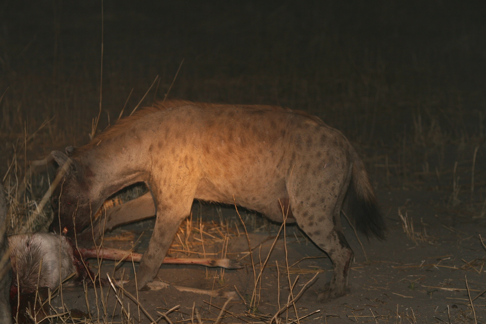
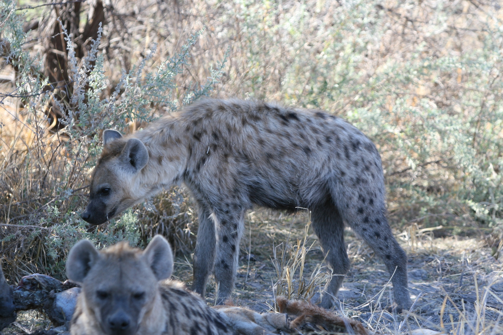

AI × 生態研究 · MiewID／Wildbook
兩張照片，
怎麼認出同一隻？
比對真實斑鬣狗照片，看看哪些外觀值得核對，再查看資料集的身分標註。
正在載入照片播放器。下方保留完整文字與原圖。
閱讀完整六段文字
姿勢變了，還是同一隻嗎？
光線、背景和姿勢會改變。先看兩張斑鬣狗照片，留意身體外觀有什麼相似、又有什麼不同。資料集原有個體標籤留到最後一段才揭露。
放大同側斑紋，保留完整照片
局部放大讓同一側身體的斑紋更容易比較。看不清楚或被遮住的地方，放大也不會補出新的細節。框線標出為解說而選的範圍，放大內容全部取自原照片，並非模型偵測結果或注意力圖。
把照片轉成可比較的數字
2024 年的方法先裁出動物，再由同一個模型把外觀轉成 2,048 維的特徵向量，用餘弦距離找候選。新照片與圖錄照片都這樣處理。畫面中的符號只作示意，並非這些照片實際算出的特徵，也不能逐項當成耳、眼、鼻的量測值。
先縮小需要比對的範圍
模型從同一物種的圖錄找出相似照片，交給研究人員仔細核對。這裡用事先選好的照片示範候選，照片大小相同，沒有實際模型分數或排名。第三張只比較後方露出完整側身的個體，不包括前景另一隻。
可以比較，也可以先不決定
研究人員要對照完整照片，確認同側斑紋與看得見的部位。動畫拿一對照片示範核對，另一張先保留待確認。這是核對方法的示範，沒有請專家重新鑑定，也不會把每張照片都歸為同一隻。
資料集把這兩張照片標為同一隻
資料集把這兩張照片標為同一隻。最後揭露的是原有標註，並非這段動畫中模型或人員新做的判定。照片沒有可核對的日期或遭遇編號，因此只能稱為兩筆影像記錄，也無法還原完整移動路線。第三張在動畫中仍待確認。
完整來源照片
照片保留原比例與動物姿勢，局部放大只方便比較。資料集的身分標註在最後揭露；動畫中的待確認狀態是用來示範核對過程。

照片一
作為待比對照片。完整原圖保留，沒有新增個體判定。

照片二
用來比較同側外觀。保留原本較暗的場景與姿勢，不補畫細節。

第三張，待確認
只比較後方的側身個體，前景另一隻不在本次比較範圍內。動畫中保留待確認，不勉強配對。